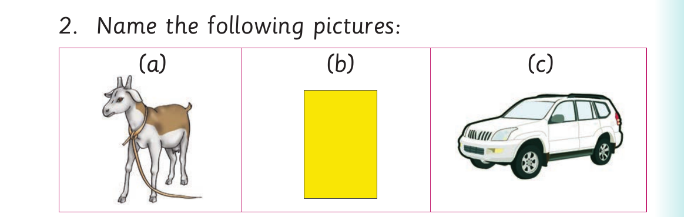

Using different sounds - continued
3. Pronounce the first sound in each word. Or finger spell the first letter in each word.
Example: pin-tin
(a) log-fog (b) bend-mend (c) log-dog
4. Read aloud or sign the following sentences: (a) I put a pin in a tin. (b) A soldier can run with a gun. (c) The cat chased the bat. (d) The fan cooled the van. (e) A fox hid in the box. (f) I saw a fat rat on a mat. (g) Tie the dog to the log. (h) There was a loud bark in the park.
Activity 2
1. Pronounce or sign the following words:
| goat | pet | card | goal | peg | car | bat |
|---|
2. Name the following pictures:

(a) A goat. (b) A card. (c) A car.